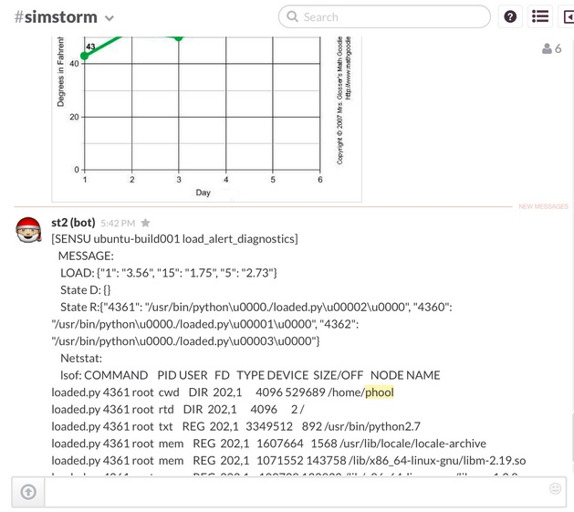

November 24, 2014
by Patrick Hoolboom
I’ve done a couple articles about getting StackStorm set up, an introductory video, and put a fair amount of effort towards minimizing the barrier to entry for new users. Overall, I think StackStorm was successful in providing a quick and easy way to get our system up and running but users need more than that. Users need to see how StackStorm can help solve their specific pain points. We needed a way to illustrate that we can provide an easy to use solution without the steep learning curve of throwing out your existing tools. Over a series of a few blog posts we are going to go over some of the ways that we have leveraged the StackStorm platform internally and how these solutions could map to your environment.
Facilitated Troubleshooting
What I’d like to walk through today is a use case we refer to as Facilitated Troubleshooting. It leverages the power of the StackStorm automation platform to provide rich context around operational incidents in a collaborative fashion. It gives the users the info they need in an urgent situation faster, in order to help minimize time to resolution.
Integrating with your Monitoring
For this particular write up I’ll be using Sensu as my monitoring system of choice. I’ll also be using the StackStorm CLI from StackStorm 0.5.2; the StackStorm GUI is not yet widely available. When it is available the GUI will simplify the usage of StackStorm.
It is important to note that integrating any system that has the ability to emit events/notifications should be fairly similar to this Sensu example. To get started you need to install the sensu and linux packs on your StackStorm installation.
st2 pack install sensu
Once those packs are installed, you can see the actions in your action library:
[email protected]:~$ st2 action list --pack=sensu +-------------------------------+-------+-------------------------+--------------------------------+ | ref | pack | name | description | +-------------------------------+-------+-------------------------+--------------------------------+ | sensu.aggregate_list | sensu | aggregate_list | List Sensu Aggregate Stats | | sensu.check_aggregates | sensu | check_aggregates | Get Sensu check aggregates | | sensu.check_aggregates_delete | sensu | check_aggregates_delete | Delete Sensu check aggregates | | sensu.check_aggregates_issued | sensu | check_aggregates_issued | Get a specific Sensu check | | | | | aggregate | | sensu.check_info | sensu | check_info | Get Sensu check info | | sensu.check_list | sensu | check_list | List Sensu checks | | sensu.check_request | sensu | check_request | Schedule a Sensu check request | | sensu.client_delete | sensu | client_delete | Delete a Sensu client | | sensu.client_history | sensu | client_history | Get Sensu client history | | sensu.client_info | sensu | client_info | Get Sensu client info | | sensu.client_list | sensu | client_list | List Sensu clients | | sensu.event_client_list | sensu | event_client_list | List Sensu events for a given | | | | | client | | sensu.event_delete | sensu | event_delete | Delete a Sensu event | | sensu.event_info | sensu | event_info | Get Sensu event info | | sensu.event_list | sensu | event_list | List Sensu events | | sensu.health | sensu | health | Sensu System Health | | sensu.info | sensu | info | Sensu System Info | +-------------------------------+-------+-------------------------+--------------------------------+
Now you will need to put the event handler on your Sensu server.
curl -o /etc/sensu/handlers/st2_handler.py
sudo chmod +x /etc/sensu/handlers/st2_handler.py
I add the st2_handler as the default handler on my Sensu server. This way I get all monitoring events in my environment sent to my control plane (StackStorm) to provide the best possible context for my automation. Here is an example config file
[email protected]:/home/phool# cat /etc/sensu/conf.d/handler.json { "handlers": { "default": { "type": "pipe", "command": "python /etc/sensu/handlers/st2_handler.py" } } }
You can also get that handler.json file via curl with the following command:
curl -o /etc/sensu/conf.d/handler.json
The handler needs a small change made in order to point it to your StackStorm instance. Open up the file in your favorite text editor and change line 13 to the ip address of where StackStorm is running:
ST2_HOST = ‘1.2.3.4’
Now that you have the event handler installed and configured you can test it. This curl command grabs a gist of some dummy data and fires the event handler with it.
curl -Ss [LINK]
You should see “Sent sensu event to st2. HTTP_CODE: 202”. This means the event was successfully sent to the StackStorm server. If we hop on over to the StackStorm server, we can see that the new trigger type got registered in the system:
[email protected]:~$ st2 trigger list +--------------------------------+-------+---------------------------+--------------------------------+ | ref | pack | name | description | +--------------------------------+-------+---------------------------+--------------------------------+ | core.st2.generic.actiontrigger | core | st2.generic.actiontrigger | Trigger encapsulating the | | | | | completion of an action | | | | | execution. | | core.st2.webhook | core | st2.webhook | Relays a Trigger POSTed to the | | | | | supplied URL. The supplied url | | | | | is used as a suffix of http:// | | | | | :6001/webhooks/gener | | | | | ic/.. | | core.st2.IntervalTimer | core | st2.IntervalTimer | Triggers on specified | | | | | intervals. e.g. every 30s, | | | | | 1week etc. | | core.st2.DateTimer | core | st2.DateTimer | Triggers exactly once when the | | | | | current time matches the | | | | | specified time. e.g. | | | | | timezone:UTC date:2014-12-31 | | | | | 23:59:59. | | core.st2.CronTimer | core | st2.CronTimer | Triggers whenever current time | | | | | matches the specified time | | | | | constaints like a UNIX cron | | | | | scheduler. | | aws.instance_status | aws | instance_status | EC2 Instance Status Sensor | | aws.volume_status | aws | volume_status | EC2 Volume Status Sensor | | jira.issues_tracker | jira | issues_tracker | JIRA issues tracker | | git.head_sha_monitor | git | head_sha_monitor | Stackstorm git commits tracker | | sensu.event_handler | sensu | event_handler | Trigger type for sensu event | | | | | handler. | +--------------------------------+-------+---------------------------+--------------------------------+
And if we check the st2reactor.log file we will see a line like this:
Nov 24 00:52:11 st2server.lab.fake.net st2reactor[3742]: INFO 140457524810288 engine [-] Found 0 rules defined for trigger event_handler
Now we have the sensu actions installed in the action library, and we have our Sensu server creating StackStorm triggers on monitoring events, let’s wire these together with some rules. Here is a basic rule that takes all Sensu events that come in to the system and sends an email with the payload of data for the event:
---
name: "sensu.event_to_email"
description: "Email all sensu events"
trigger:
type: "sensu.event_handler"
parameters: {}
criteria: {}
action:
ref: "core.sendmail"
parameters:
to: "moc.liamenull@ekaf"
subject: "'[SENSU] {{trigger.client.name}} - {{trigger.check.name}}'"
body: "{{trigger}}"
enabled: true
If you’d like you can pull this down from the follow URL:
This event illustrates how the rules engine works at its most basic level but it isn’t a very useful rule. What we’ll do is actually create a workflow that will do some basic diagnostic work when a monitoring event comes in. For this workflow we are going to use a high cpu load alert. I have the check_load script from the Sensu community repo running on all my servers so I’ll be basing the rule and workflow around that alert.
Writing Your Workflow
First let’s build a workflow for troubleshooting. I started by thinking, if I got paged about high load, what would be the first things I would do/want to know about? I came up with the following low hanging fruit:
One important thing to note here is that this data needs to be returned in some sort of collaborative way to not only provide this context to me but also to anyone else that may be working on the issue. Since we heavily use ChatOps here at StackStorm and support chat integrations via what we call “storm bot”, I have chosen to use the core.stormbot_say action to post this data into our chat room. Your actual collaboration environment may be different so you may choose to post this to a ticketing system or even email.
The tasks I asked StackStorm to perform are fairly basic but it is a lot easier if the system does them for me. Now, there are actions in the ‘linux’ StackStorm pack from the community repo that will do all of these things. It is just a matter of writing a workflow to stitch them together.
I have already written this particular diagnostic workflow, and it is included in the ‘linux’ pack, but I would like to go over the process of constructing it here.
I used the built in workflow engine “action-chain” for this since it is a simple linear workflow with very little conditional logic. For more complex workflows you’ll use our Mistral based workflow.
The first thing I did is write the “chain” file, that defines all of the actions in the chain and their links (on-success or on-failure). Here is the chain file:
---
chain:
-
name: "check_load"
ref: "linux.check_loadavg"
params:
hosts: "{{hostname}}"
period: "all"
on-success: "d_state_processes"
on-failure: "email_escalation"
-
name: "d_state_processes"
ref: "linux.check_processes"
params:
hosts: "{{hostname}}"
search: "state"
criteria: "D"
args: "pidlist"
on-success: "r_state_processes"
on-failure: "email_escalation"
-
name: "r_state_processes"
ref: "linux.check_processes"
params:
hosts: "{{hostname}}"
search: "state"
criteria: "R"
args: "pidlist"
on-success: "netstat"
on-failure: "email_escalation"
-
name: "netstat"
ref: "linux.netstat_grep"
params:
hosts: "{{hostname}}"
pids: "{{d_state_processes[hostname].stderr}} {{r_state_processes[hostname].stderr}}"
on-success: "lsof"
on-failure: "email_escalation"
-
name: "lsof"
ref: "linux.lsof_pids"
params:
hosts: "{{hostname}}"
pids: "{{d_state_processes[hostname].stderr}} {{r_state_processes[hostname].stderr}}"
on-success: "to_file"
on-failure: "email_escalation"
-
name: "stormbot_say"
ref: "core.stormbot_say"
params:
source: "ACTION"
name: "load_alert_diagnostics"
msg: "'\nLOAD: {{check_load[hostname].stdout}}\nState D: {{d_state_processes[hostname].stdout}}\nState R:{{r_state_processes[hostname].stdout}}'"
on-failure: "email_escalation"
-
name: "email_escalation"
ref: "core.local"
params:
cmd: "echo 'ST2 Workflow Failure\tThe load_alert workflow has failed\t{{__results}}' >> /tmp/chain && echo 'Output written to file'"
-
name: "to_file"
ref: "core.local"
params:
cmd: "echo 'ST2 Workflow Results\n\tThe load_alert workflow results:\n\n{{__results}}' >> /tmp/chain && echo 'Output written to file'"
default: "check_load"
This workflow simply walks through the items we addressed in the bullet points above, collects the appropriate data, and then spits it out into chat via the integrated chatops action. Once again, you could have it spit the information out into a ticketing system or even email if you wanted.
Most of this is fairly self explanatory.
The chain will continue until it completes an action that does not have the next step defined.
The action-chain is treated as any other action in the system. So the action-chain requires a meta-data file in order to be registered in the action library. We simply write the meta data defining action-chain as the runner_type, point the entry point at the chain file, and fill in any parameters. For this particular workflow the metadata file looks like this:
---
name: "diag_loadavg"
description: "Diagnostic workflow for high load alert"
runner_type: "action-chain"
enabled: true
entry_point: "diag_loadavg.chain.yaml"
parameters:
hostname:
type: "string"
description: "Hostname of the server to perform load_alert diagnostics on"
If you installed the ‘linux’ pack earlier all of this should already be loaded in your system. Now let’s write a rule to tie this into a cpu load monitoring event.
Tying it all Together with a Rule
We have our incoming events now, and we have our diagnostic workflow defined in the action library. Next we need to create a rule that will fire the diagnostic workflow on the appropriate Sensu event. Here is a basic rule to fire the workflow on a Sensu event:
---
name: "sensu.loadavg_diag"
description: "Run diagnostic checks when receiving a high load alert"
trigger:
type: "sensu.event_handler"
parameters: {}
criteria: {}
action:
ref: "linux.diag_loadavg"
parameters:
hostname: "{{trigger.client.name}}"
enabled: true
We have got the correct trigger mapped to the action (linux.diag_loadavg) and we are using the client name from the trigger payload as the hostname (we can see in the parameters for the action that we have the namespaced template variable there trigger.client.name). All inputs to the trigger are namespaced under the name ‘trigger’. Since Sensu sends in JSON, it gets parsed all the way down and we have access to those keys. In this case we are using the name field from the client section of the payload as the hostname.
The problem with this rule is that it will fire on every Sensu event…regardless of whether it is load related or not. We need to leverage the criteria field to narrow it down. To determine what data is available to us, we refer to the Sensu docs to see what is given in the event payload:
http://sensuapp.org/docs/0.16/event_data
Let’s go ahead and filter on the name of the check and the output.
---
name: "sensu.loadavg_diag"
description: "Run diagnostic checks when receiving a high load alert"
trigger:
type: "sensu.event_handler"
parameters: {}
criteria:
trigger.check.name:
pattern: "check_load"
type: "equals"
trigger.check.output:
pattern: ".*CRITICAL.*"
type: "matchregex"
action:
ref: "linux.diag_loadavg"
parameters:
hostname: "{{trigger.client.name}}"
enabled: true
You can see that we have added trigger.check.name and trigger.check.output as fields to be used in the criteria section. For these fields we need to specify the type of operator that will be used and the pattern to try and match against. The currently supported operator types are:
I have chosen to to use matchregex to look for CRITICAL in the output and to make sure the name equals “check_load”. This is a fairly good rule but it could be flappy. We may not want to fire the diagnostic workflow until the 3rd or more failure to avoid false positives. The other addition that I like to have is to only run it on the creation of the event. We generally don’t need the diagnostic work done on an event resolution. Here is my final version of the rule:
---
name: "sensu.loadavg_diag"
description: "Run diagnostic checks when receiving a high load alert"
trigger:
type: "sensu.event_handler"
parameters: {}
criteria:
trigger.check.name:
pattern: "check_load"
type: "equals"
trigger.check.output:
pattern: ".*CRITICAL.*"
type: "matchregex"
trigger.occurrences:
pattern: 2
type: "gt"
trigger.action:
pattern: "create"
type: "matchregex"
action:
ref: "linux.diag_loadavg"
parameters:
hostname: "{{trigger.client.name}}"
enabled: true
You can save this rule in the rules folder of the sensu pack (the default location would be /opt/stackstorm/sensu/rules). Once you have the rule saved on disk, use the st2 client to register it:
st2 rule create NEW_RULE_FILENAME.yaml
Now check the rule list and see if it appears:
st2 rule list +--------------------------+-------------------------+------------------------------------------+ | id | name | description | +--------------------------+-------------------------+------------------------------------------+ | 546b03e6e7fccd108adb533c | st2_ubuntu_python_tests | Run python tests on Ubuntu for each | | | | commit to master of st2 | | 546bbfa8e7fccd430c6d67df | st2_health_check | Touches a file on a 5 minute interval | | 5472df9cd217540e9d2278ef | sensu.loadavg_diag | Run diagnostic checks when receiving a | | | | high load alert | +--------------------------+-------------------------+------------------------------------------+
There it is! ‘sensu.loadavg_diag’ is our new rule. In order to test the full rule you would need to add some load to one of your monitored servers, but we can easily run the workflow by hand and see if it completes.
st2 run linux.diag_loadavg hostname=localhost -a
+-----------------+-----------------------------+
| Property | Value |
+-----------------+-----------------------------+
| id | 5472ff14d217540e9d227939 |
| context | { |
| | "user": "stanley" |
| | } |
| parameters | { |
| | "hostname": "localhost" |
| | } |
| status | scheduled |
| start_timestamp | 2014-11-24T09:49:08.723713Z |
| result | |
| action | linux.diag_loadavg |
| callback | |
+-----------------+-----------------------------+
To get the results, execute:
$ st2 execution get 5472ff14d217540e9d227939
Now we can check the execution list and we’ll see the workflow going through the actions we defined earlier.
st2 execution list -n 7 +--------------------------+-----------------------+--------------+-----------+-----------------------------+ | id | action | context.user | status | start_timestamp | +--------------------------+-----------------------+--------------+-----------+-----------------------------+ | 5472ff14d217540e9d227939 | linux.diag_loadavg | stanley | succeeded | 2014-11-24T09:49:08.723000Z | | 5472ff14d217540e96362189 | linux.check_loadavg | stanley | succeeded | 2014-11-24T09:49:08.819000Z | | 5472ff16d217540e9636218a | linux.check_processes | stanley | succeeded | 2014-11-24T09:49:10.874000Z | | 5472ff18d217540e9636218b | linux.check_processes | stanley | succeeded | 2014-11-24T09:49:12.907000Z | | 5472ff1ad217540e9636218c | linux.netstat_grep | stanley | succeeded | 2014-11-24T09:49:14.944000Z | | 5472ff1bd217540e9636218d | linux.lsof_pids | stanley | succeeded | 2014-11-24T09:49:15.989000Z | | 5472ff1dd217540e9636218e | core.stormbot_say | stanley | succeeded | 2014-11-24T09:49:17.012000Z | +--------------------------+-----------------------+--------------+-----------+-----------------------------+
If we get the execution results of the workflow (linux.diag_loadavg) we can see the output from all of the actions.
st2 execution get 5472ff14d217540e9d227939
+-----------------+---------------------------------------------------------+
| Property | Value |
+-----------------+---------------------------------------------------------+
| id | 5472ff14d217540e9d227939 |
| action | linux.diag_loadavg |
| callback | |
| context | { |
| | "user": "stanley" |
| | } |
| parameters | { |
| | "hostname": "localhost" |
| | } |
| result | { |
| | "stormbot_say": { |
| | "localhost": { |
| | "failed": false, |
| | "stderr": "", |
| | "return_code": 0, |
| | "succeeded": true, |
| | "stdout": "Message posted successfully" |
| | } |
| | }, |
| | "d_state_processes": { |
| | "localhost": { |
| | "failed": false, |
| | "stderr": "", |
| | "return_code": 0, |
| | "succeeded": true, |
| | "stdout": "{}" |
| | } |
| | }, |
| | "netstat": { |
| | "localhost": { |
| | "failed": false, |
| | "stderr": "", |
| | "return_code": 0, |
| | "succeeded": true, |
| | "stdout": "" |
| | } |
| | }, |
| | "check_load": { |
| | "localhost": { |
| | "failed": false, |
| | "stderr": "", |
| | "return_code": 0, |
| | "succeeded": true, |
| | "stdout": "{\"1\": \"0.055\", \"15\": |
| | \"0.095\", \"5\": \"0.09\"}" |
| | } |
| | }, |
| | "r_state_processes": { |
| | "localhost": { |
| | "failed": false, |
| | "stderr": "", |
| | "return_code": 0, |
| | "succeeded": true, |
| | "stdout": "{}" |
| | } |
| | }, |
| | "lsof": { |
| | "localhost": { |
| | "failed": false, |
| | "stderr": "", |
| | "return_code": 0, |
| | "succeeded": true, |
| | "stdout": "" |
| | } |
| | } |
| | } |
| start_timestamp | 2014-11-24T09:49:08.723000Z |
| status | succeeded |
+-----------------+---------------------------------------------------------+
Since this particular server wasn’t experiencing high load, the output isn’t all that interesting. When this rule/workflow combination gets really interesting is during a high load event. I went ahead and wrote a script to simulate load on one of my servers to test out the rule and workflow. Sure enough, Sensu sent in the trigger via the handler and it started the diagnostic workflow. The workflow collected all of the data and then posted it to a chat room on Slack as you can see below:

This particular workflow doesn’t do a lot of manipulation of the data through either filtering or formatting. The main purpose of it is to get a full context of what is causing the load on the machine. There are a number of ways to “prettify” this data going forward as we improve upon this workflow.
I truncated a fair amount of the lsof output as it was quite large, but you can see that the context that was I was looking for when I wrote the workflow is collected for me automatically when the appropriate monitoring event fires. This can be tremendously helpful when it is 3am and I trying to deal with an outage…not having to remember the exact command line arguments or having a context at the EXACT moment of the event can definitely give operators a leg up in troubleshooting outages.
We will dive into chatops in another article. If you are running StackStorm supporting your chatops then keep in mind that the integration of StackStorm to your chat is bi-directional so not only would StackStorm post to your chat environment it would also listen to that environment. Via our “storm bot” integration, any action you can take via the StackStorm CLI can also be taken from your chat environment.
I know that my diagnostic workflow is pretty simple. With actions written by networking engineering experts or a really good DBA this would be even more valuable. The power of these diagnostic workflows really come in when you start adding domain knowledge from these various subject matter experts on your team, or even across your IT silos. As the quality of the actions improve, the richness of the context for the troubleshooting becomes even greater. Sharing this super rich context around an event in a collaborative fashion such as chat or bug tracking systems is tremendously helpful as is accessing it via StackStorm’s audit capabilities; that sounds like yet another possible subject for a blog post.
Please let me know what you think. What would make this kind of article more useful? What other articles would you like to see? Comment below or find us on our google groups or of course on IRC #stackstorm on freednode.